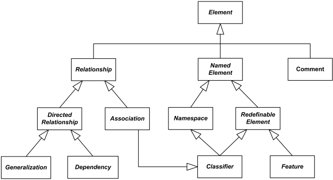
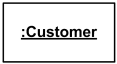
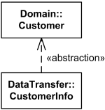

UML Core Elements Reference
| Notation | Description |
|---|---|
| Element | |
| UML Element has no notation. |
Element is the abstract root UML metaclass, it has no superclass in the hierarchy of UML elements. It is the superclass for all metaclasses in the UML infrastructure library. |
|

Some subclasses of UML Element |
|
| Ownership | |
|
Each UML element has composition to itself - it could own other elements. |
UML element has a composition relationship to itself to support the capability for elements to own other elements. Thus, each UML element could be owner of other elements as defined by composition relationship. Note, that any UML element may not directly or indirectly own itself. |
| Namespace | |
| Namespace has no notation in its own right. |
Namespace is an abstract named element that could contain (or own) a set of named elements. In other words, namespace is a container for named elements. Some subclasses of the namespace are: package, classifier, behavioral feature, state, region. |
|
Namespace is an abstract named element and a container for named elements. |
|
| Instance | |
|
instance-specification-name ::=
[labels]
[instance-name] ':' [composite-type-names]
|
Instance is some system entity, concrete manifestation (implementation) of an abstraction. Abstraction could be represented by one or more classifiers or no classifiers at all. UML 2.4 provides neither syntax BNF rules nor even verbal rules for instance names. I made up some BNF shown to the left. Instance specification is rendered with its name underlined. In some cases, when it is obvious that diagram shows an instance, it is allowed not to use underlining. |
|

Anonymous instance of the Customer class. |
An instance specification uses the same notation as classifier. Name is shown as an underlined concatenation of the instance name (if any), a colon (':') and classifier name(s). In some cases, when it is obvious that diagram shows an instance, it is allowed not to use underlining. Names are optional both for instance specifications and for UML classifiers. |
|
Instance newPatient of the unnamed or unknown class. |
In some cases, classifier of the instance is unknown or not specified. When instance name is also not provided, the notation for such an anonymous instance of an unnamed classifier is simply underlined colon - :. |
|
Instance app-srv-37 of the Sun Fire X4150 Server stereotyped as device. |
Instance could have stereotype, instance name, and classifier specified. |
|
Instance front-facing-cam of the Camera class from android.hardware package. |
Instance could have instance name, class and namespace (e.g. package) specified. |
|
Instance orderPaid of the Date class |
If an instance has some value, the value specification is shown either after an equal sign ('=') following the instance name, or without the equal sign below the name. |
|
Instance newPatient of the Patient class |
Slots are shown as structural features with the feature name followed by an equal sign ('=') and a value specification. Type (classifier) of the feature could be also shown. |
| Dependency | |
|
Data Access depends on Connection Pool |
Dependency signifies a supplier / client relationship between model elements where the modification of the supplier may impact the client model elements. A dependency implies the semantics of the client is not complete without the supplier. A dependency is generally shown as a dashed arrow between two model elements. The model element at the tail of the arrow (the client) depends on the model element at the arrowhead (the supplier). The arrow may be labeled with an optional stereotype and an optional name. |
|
Dependency relationship overview diagram |
|
| Usage | |
|
Search Controller uses Search Engine. |
Usage is a dependency relationship in which one element (client) requires another element (or set of elements) (supplier) for its full implementation or operation. For example, it could mean that some method(s) within a (client) class uses objects (e.g. parameters) of the another (supplier) class. A usage dependency is shown as a dependency with a «use» keyword attached to it. |
| Abstraction | |
|

Customer from Domain is abstraction for CustomerInfo from DataTransfer. (Common convention example - the more abstract element as supplier.) |
Abstraction is a dependency relationship that relates two elements or sets of elements (called client and supplier) representing the same concept but at different levels of abstraction or from different viewpoints. An abstraction relationship is shown as a dependency arrow from the client at the tail to the the supplier at the arrowhead, with the «abstraction» keyword or some other predefined stereotype name attached to. In general, client depends on supplier, and it is a common convention in the OOAD for the abstraction relationship to have the more abstract element as supplier. |

Customer from Domain is abstraction for CustomerInfo from DataTransfer. (Reverse notation example - the less abstract element as supplier.) |
UML modeler may decide that for some domain or task it is more appropriate to show a more abstract element dependent on the more specific element. |